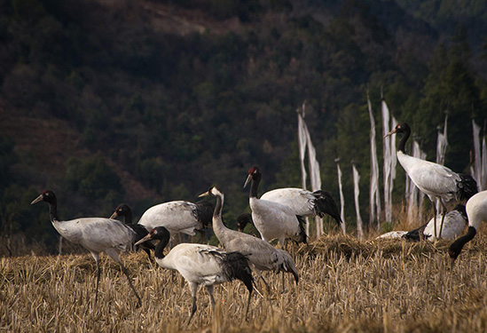
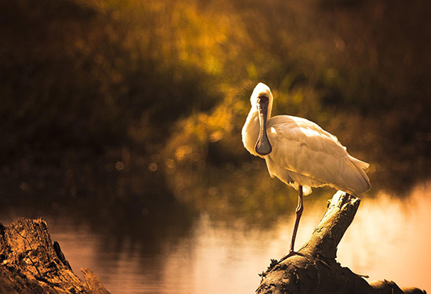
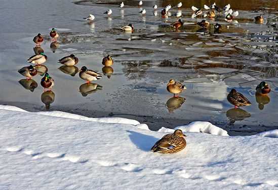
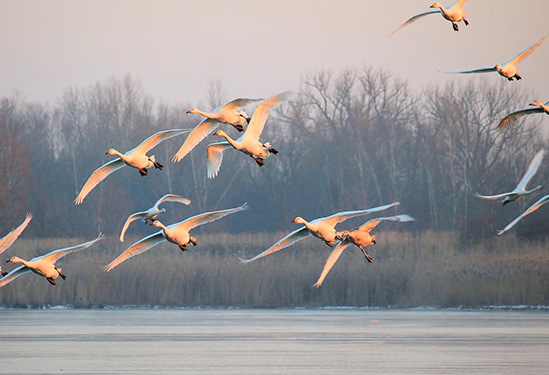
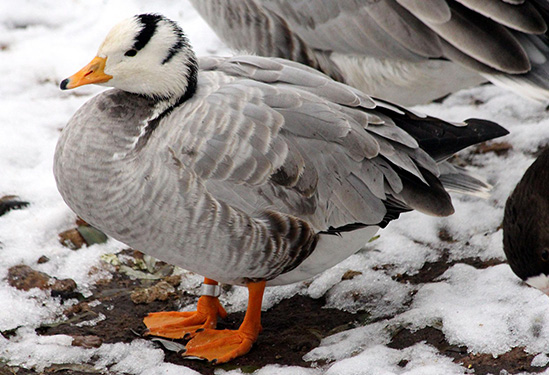
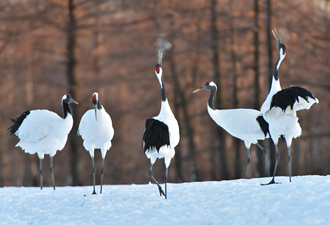

> 한국조류보호협회 >
홍보활동 > 철새 모이주기
철새 모이주기
"겨울에는 철새들이 많이 찾아오는 지역을 중심으로 매년(11월~익년 3월 사이) 새 먹이주기 운동을 펼치고 있습니다. "
겨울철새란?
우리나라에는 세계적 희귀조에 이르기까지 겨울에 많은 손님들이 전국의 이름난 도래지에 와서 긴 겨울을 보낸다. 우리나라의 이름난 철새도래지 중에는 천연기념물로 지정하여 중앙정부와 지역자치단체가 보호하는 지역이 있다. 한강하구, 낙동강하구 등이 대표적이라 할 수 있으며 대단위 개발에 대해 가장 강력하게 법으로 지켜가고 있다.
지역별 철새도래지

- 1 철원철새도래지(천연기념물 제245호)
- 우리나라뿐만 아니라 세계 최대의 두루미류 도래지이다. 우리나라에서 관찰된 두루미류는 총 7종인데, 그 중 두루미, 재두루미, 흑두루미, 검은목두루미를 주로 볼 수 있으며, 쇠재두루미, 카나다두루미, 시베리아흰두루미는 아주 드물게 관찰된다.

- 2 한강하구(파주에서 강화까지)
- 한강하구는 수도권에 인접하고 대단위 개발사업 등으로 철새도래지의 보전이 위태로운 지역이다. 한강하구는 천연기념물 서식지역으로써 겨울철뿐만 아니라 여름철에도 매우 중요한 지역이다.

- 3 천수만
- 90년대 초반부터 오리·기러기류의 수많은 겨울철새들이 오면서 현재는 중부지역의 최대·최고의 철새도래지로 각광받고 있다. 특히 매년 수십만 마리의 가창오리들이 펼치는 군무를 통해 널리 유명해진 곳이기도 하다. 이곳에는 유럽과 아시아 전반에 걸쳐 있는 노랑부리저어새와 매우 희귀한 황새, 그리고 고고한 자태를 뽐내고 있는 고니류 등을 볼 수 있다.

- 4 금강하구
- 금강하구는 우리나라의 철새도래지 중에 관찰시설 및 전시관이 가장 잘 정비된 곳이다. 서천의 철새탐조대와 군산의 철새조망대 및 양쪽 제방에 간이탐조대가 설치되어 새와 인간이 직접적으로 마주치지 않으면서 쉽게 관찰할 수 있는 잇점이 있다. 금강하구의 대표적인 천연기념물은 검은머리물떼새와 고니류를 들 수 있다.

- 5 해남일대(영암호,고천암호,금호호,순천만)
- 해남일대는 땅끝마을이라는 유명한 관광지와 함께 겨울철새 도래지로써 영암호 일대, 순천만 일대가 부각되고 있다. 특히 주변의 채소밭과 함께 먹이가 풍부하여 오리·기러기들의 주요 도래지역할을 한다. 순천만은 갈대밭으로 유명하며, 흑두루미의 월동지로써 그 중요성이 날로 증가하는 지역이다. 아직 개발이 덜 된 지역이라서 외부 환경에 민감한 흑두루미가 지속적으로 월동하고 있다. 그밖에 세계적 희귀조류 등도 함께 관찰할 수 있다.

- 6 우포늪과 주남저수지, 낙동강 하구
- 과거 우리나라 최대의 겨울철새도래지였지만 주변 환경이 훼손되거나 새를 내쫓으려는 지역 주민과의 마찰로 현재는 그 수가 많이 줄어들었다. 이 지역은 두루미류의 주요 이동경로 중에 있어 철원에서 일본 가고시마 현 이즈미 시를 왕래하는 데 중간휴게소 역할을 하는 곳이다. 저수지의 경치도 아름답고, 가장 가까운 거리에서 새를 관찰할 수 있는 장점도 있다.